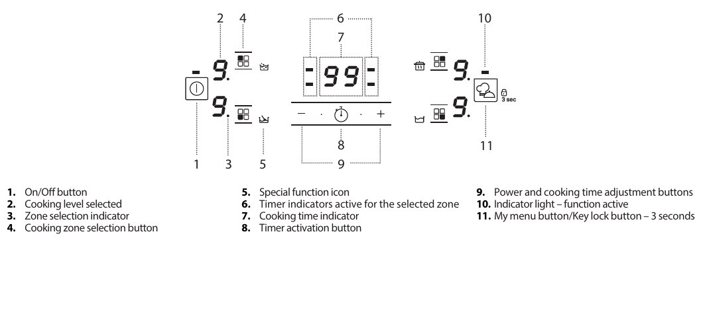
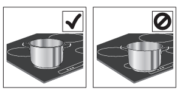
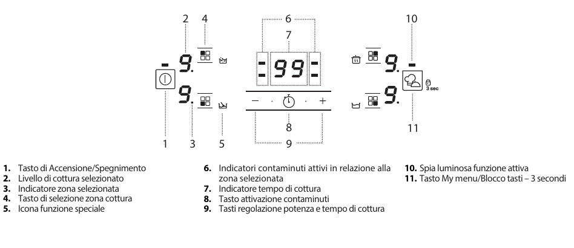

Induction hob
Safety
- Do not use the hob if the surface is cracked.
- Do not leave objects on the cooking zones.
- Never leave cooking unattended, especially with fats and oils.
- Keep children away from the hob.
Switching on and off
- On: hold the power button for about 1 second.
- Off: press the same button; all cooking zones switch off.

Daily use
- Choose the zone: press the button of the cooking zone you want.
- Power: use + and - to set the level from 1 to 9.
- Booster: some zones have a fast-heating function, shown as P.
- Switching a zone off: select it and press - until the level reaches 0.

Key lock
- Hold the My menu / Key lock button for 3 seconds to lock the keys and avoid accidental activation. Repeat to unlock.
Timer
- Select and switch on the cooking zone, press the clock icon and set the time with + and -. The timer counts down and switches the zone off automatically when the time is up.
If you have any problem, contact the host, Alessandro.
Piano a induzione
Sicurezza
- Non usare il piano se la superficie è incrinata.
- Non appoggiare oggetti sulle zone di cottura.
- Non lasciare mai la cottura incustodita, soprattutto con grassi e oli.
- Tieni i bambini lontani dal piano.
Accensione e spegnimento
- Accendere: tieni premuto il tasto di accensione per circa 1 secondo.
- Spegnere: premi lo stesso tasto; tutte le zone si spengono.

Uso quotidiano
- Scegli la zona: premi il tasto della zona di cottura che vuoi usare.
- Potenza: con + e - imposti il livello da 1 a 9.
- Booster: alcune zone hanno il riscaldamento rapido, indicato con P.
- Spegnere una zona: selezionala e premi - fino a portare il livello a 0.
Blocco tasti
- Tieni premuto 3 secondi il tasto My menu / Blocco tasti per bloccare i tasti ed evitare accensioni accidentali. Ripeti per sbloccare.
Timer
- Seleziona e accendi la zona di cottura, premi l’icona dell’orologio e imposta il tempo con + e -. Il timer fa il conto alla rovescia e spegne da solo la zona allo scadere.
Se riscontri problemi, contatta l’host, Alessandro.
Placa de inducción
Seguridad
- No uses la placa si la superficie está agrietada.
- No dejes objetos sobre las zonas de cocción.
- No dejes nunca la cocción sin vigilancia, sobre todo con grasas y aceites.
- Mantén a los niños alejados de la placa.
Encendido y apagado
- Encender: mantén pulsado el botón de encendido durante 1 segundo aproximadamente.
- Apagar: pulsa el mismo botón; todas las zonas se apagan.
El esquema está en italiano.
Uso diario
- Elige la zona: pulsa el botón de la zona de cocción que quieres usar.
- Potencia: con + y - ajustas el nivel de 1 a 9.
- Booster: algunas zonas tienen calentamiento rápido, indicado con P.
- Apagar una zona: selecciónala y pulsa - hasta llevar el nivel a 0.
Bloqueo de teclas
- Mantén pulsado 3 segundos el botón My menu / Bloqueo de teclas para bloquear los botones y evitar encendidos accidentales. Repite para desbloquear.
Temporizador
- Selecciona y enciende la zona de cocción, pulsa el icono del reloj y ajusta el tiempo con + y -. El temporizador hace la cuenta atrás y apaga solo la zona cuando termina.
Si tienes algún problema, contacta con el anfitrión, Alessandro.
Plaque à induction
Sécurité
- N’utilisez pas la plaque si la surface est fissurée.
- Ne posez pas d’objets sur les zones de cuisson.
- Ne laissez jamais la cuisson sans surveillance, surtout avec des graisses et des huiles.
- Tenez les enfants éloignés de la plaque.
Allumer et éteindre
- Allumer : maintenez la touche marche/arrêt enfoncée environ 1 seconde.
- Éteindre : appuyez sur la même touche ; toutes les zones s’éteignent.
Le schéma est en italien.
Utilisation quotidienne
- Choisir la zone : appuyez sur la touche de la zone de cuisson que vous voulez utiliser.
- Puissance : avec + et - vous réglez le niveau de 1 à 9.
- Booster : certaines zones ont un chauffage rapide, indiqué par P.
- Éteindre une zone : sélectionnez-la et appuyez sur - jusqu’à ramener le niveau à 0.
Verrouillage des touches
- Maintenez 3 secondes la touche My menu / Verrouillage pour bloquer les touches et éviter les allumages accidentels. Répétez pour déverrouiller.
Minuteur
- Sélectionnez et allumez la zone de cuisson, appuyez sur l’icône de l’horloge et réglez le temps avec + et -. Le minuteur fait le compte à rebours et éteint tout seul la zone à la fin.
En cas de problème, contactez l’hôte, Alessandro.